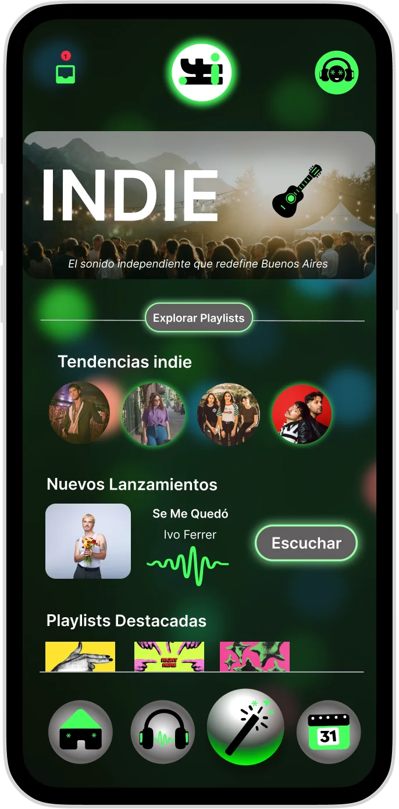

IFI: Mobile App & Landing
Case study highlighting the user flow for a music-sharing platform launch. The project focuses on high-fidelity wireframes and visual prototyping to establish a clear user journey before development.
Interface
Design
Mobile
App Prototyping
Mid
& Hi-Fi Wireframes
See Brand Project